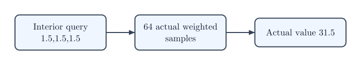
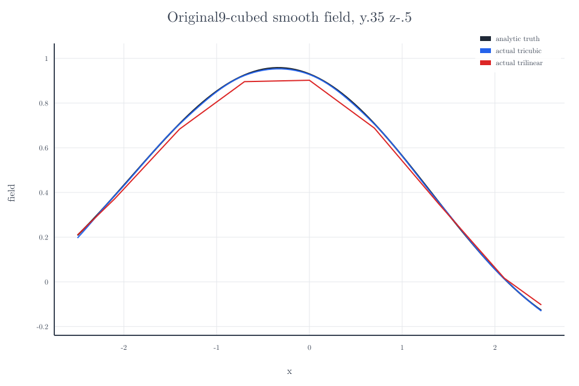
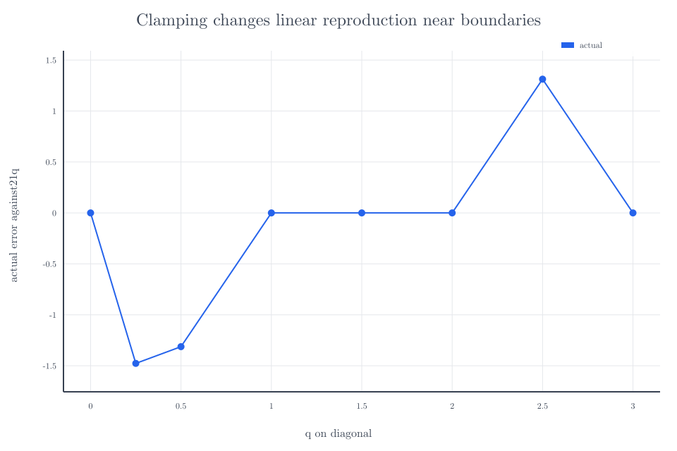
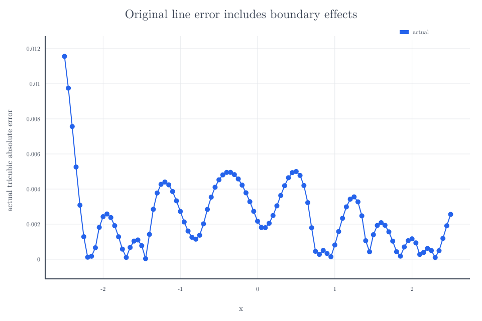

Tricubic interpolation: the actual64-sample neighborhood
Abstract
A sampled three-dimensional field must be evaluated between grid points. Separable cubic convolution blends64 nearby samples, with explicit validation and a stated boundary extension.
The method
With Keys kernel a=−1/2, w(t)=(a+2)|t|³−(a+3)|t|²+1 for t|≤1, a|t|³−5a|t|²+8a|t|−4a for1<|t<2, and0 otherwise. The3D interpolant sums w(tx−l)w(ty−m)w(tz−n)V over l,m,n∈{−1,0,1,2}. Interior weights reproduce constants and linear coordinates; their tensor product reproduces trilinear fields. At boundaries, repeated edge samples change that reproduction property. Negative weights permit overshoot, so this is not a range-preserving interpolator.
Simple worked example
#include <dm/dm.hpp>
int main() {
namespace a = dm::algorithms;
namespace g = dm::graphics;
std::filesystem::create_directories("build");
std::vector<double> axis{0, 1, 2, 3}, v(64);
std::iota(v.begin(), v.end(), 0.);
auto r = a::tricubic_work(axis, axis, axis, v, 1.5, 1.5, 1.5);
std::print("| actual result | actual sample reads | weight sum |\n|---:|---:|---:|\n|{}|{}|{}|\n",
r.value, r.indices.size(),
std::accumulate(r.weights.begin(), r.weights.end(), 0.));
std::print("\nFlattened field16x+4y+z gives31.5 at the centre.\n");
g::Diagram concept_diagram(48, 1100);
concept_diagram.node("n0", {0, 0}, "Interior query 1.5,1.5,1.5");
concept_diagram.node("n1", {5, 0},
std::format("{} actual weighted samples",
r.indices.size()));
concept_diagram.node("n2", {10, 0}, std::format("Actual value {}", r.value));
concept_diagram.edge("n0", "n1").edge("n1", "n2");
concept_diagram.save_svg("build/tricubic_interpolation_tiny.svg");
}| actual result | actual sample reads | weight sum |
|---|---|---|
| 31.5 | 64 | 1 |
Flattened field16x+4y+z gives31.5 at the centre.

The retained original experiment
#include <dm/dm.hpp>
int main() {
namespace a = dm::algorithms;
namespace g = dm::graphics;
std::filesystem::create_directories("build");
auto r = a::tricubic_example();
std::print("| x | truth | cubic | linear |\n|---:|---:|---:|---:|\n");
for (std::size_t i = 0; i < r.x.size(); i += 10)
std::print("|{}|{}|{}|{}|\n", r.x[i], r.truth[i], r.cubic[i],
r.linear[i]);
auto p = g::RPlot::create();
p.line(r.x, r.truth, "analytic truth", {31, 41, 55}, 2.5);
p.line(r.x, r.cubic, "actual tricubic", {37, 99, 235});
p.line(r.x, r.linear, "actual trilinear", {220, 38, 38});
p.title("Original9-cubed smooth field, y.35 z-.5").x_label("x").y_label(
"field");
p.save_svg("build/tricubic_interpolation_original.svg");
}| x | truth | cubic | linear |
|---|---|---|---|
| -2.5 | 0.20783053590142161 | 0.19626818565754114 | 0.20943220496387974 |
| -2 | 0.4325858282947698 | 0.4301586213148817 | 0.41574260459125584 |
| -1.5 | 0.6645266625490991 | 0.6652998139718412 | 0.6387907950623332 |
| -1 | 0.8533035637402383 | 0.850578903783117 | 0.8048391598581601 |
| -0.5 | 0.951372118823424 | 0.9468443724315323 | 0.8976842590966231 |
| 0 | 0.9301094923390277 | 0.9279400729757759 | 0.9020993946272597 |
| 0.5 | 0.7905733228288344 | 0.7855729724652095 | 0.749276441452866 |
| 1 | 0.5639615596043248 | 0.5631476826197968 | 0.5415429406300837 |
| 1.5 | 0.30132189566677753 | 0.30272055917580093 | 0.29900254053586967 |
| 2 | 0.0568856583598095 | 0.05572027526592685 | 0.06366267041829998 |
| 2.5 | -0.12801917675677796 | -0.1305778089660507 | -0.10327416326821634 |

Checking the theory and controls
#include <dm/dm.hpp>
int main() {
namespace a = dm::algorithms;
namespace g = dm::graphics;
std::filesystem::create_directories("build");
std::vector<double> axis{0, 1, 2, 3}, v(64);
std::iota(v.begin(), v.end(), 0.);
std::vector<double> x, y;
std::print("| query coordinate | actual value | linear truth |\n|---:|---:|---:|\n");
for (double q : {0., .25, .5, 1., 1.5, 2., 2.5, 3.}) {
auto r = a::tricubic_work(axis, axis, axis, v, q, q, q);
std::print("|{}|{}|{}|\n", q, r.value, 21 * q);
x.push_back(q);
y.push_back(r.value - 21 * q);
}
auto p = g::RPlot::create();
p.line(x, y, "actual", {37, 99, 235}, 2);
p.points(x, y, "", {37, 99, 235}, 5);
p.title("Clamping changes linear reproduction near boundaries").x_label(
"q on diagonal").y_label("actual error against21q");
p.save_svg("build/tricubic_interpolation_controls.svg");
}| query coordinate | actual value | linear truth |
|---|---|---|
| 0 | 0 | 0 |
| 0.25 | 3.7734375 | 5.25 |
| 0.5 | 9.1875 | 10.5 |
| 1 | 21 | 21 |
| 1.5 | 31.5 | 31.5 |
| 2 | 42 | 42 |
| 2.5 | 53.8125 | 52.5 |
| 3 | 63 | 63 |

Sensitivity and selected work
#include <dm/dm.hpp>
int main() {
namespace a = dm::algorithms;
namespace g = dm::graphics;
std::filesystem::create_directories("build");
auto r = a::tricubic_example();
std::vector<double> x, y;
std::print("| x | actual cubic absolute error | actual linear absolute error |\n|---:|---:|---:|\n");
for (std::size_t i = 0; i < r.x.size(); ++i) {
double e = std::abs(r.cubic[i] - r.truth[i]);
x.push_back(r.x[i]);
y.push_back(e);
if (i % 10 == 0)
std::print("|{}|{}|{}|\n", r.x[i], e,
std::abs(r.linear[i] - r.truth[i]));
}
auto p = g::RPlot::create();
p.line(x, y, "actual", {37, 99, 235}, 2);
p.points(x, y, "", {37, 99, 235}, 5);
p.title("Original line error includes boundary effects").x_label("x").y_label("actual tricubic absolute error");
p.save_svg("build/tricubic_interpolation_work.svg");
}| x | actual cubic absolute error | actual linear absolute error |
|---|---|---|
| -2.5 | 0.01156235024388047 | 0.001601669062458122 |
| -2 | 0.00242720697988813 | 0.016843223703513988 |
| -1.5 | 0.0007731514227421465 | 0.02573586748676593 |
| -1 | 0.002724659957121345 | 0.04846440388207818 |
| -0.5 | 0.004527746391891685 | 0.0536878597268009 |
| 0 | 0.002169419363251879 | 0.02801009771176799 |
| 0.5 | 0.005000350363624895 | 0.04129688137596843 |
| 1 | 0.0008138769845280613 | 0.022418618974241133 |
| 1.5 | 0.0013986635090234012 | 0.002319355130907863 |
| 2 | 0.0011653830938826507 | 0.006777012058490482 |
| 2.5 | 0.002558632209272743 | 0.024745013488561618 |

Interpretation and limits
Queries must lie inside finite uniformly spaced axes; complete shape and finite sample validation precedes index conversion. The query performs64 sample reads, but the convenience call also validates the complete volume. A boundary error curve is not evidence for a uniform interior convergence order.
Every figure is saved locally by its complete editable program. No separate reconstruction supplies algorithm state. Counters describe the selected events, not elapsed time or peak memory.
References
Verified in the shared ten-document batch: 85 scoped native cases;21 directly
instrumented ASan/UBSan cases;36 executable public examples;63/63 definitions
across13 full scopes plus8 changed mixed-scope contracts;10 hovers;14393
independent records/67914 checks;frozen valid-input comparisons across all ten
families including bit-identical default Iris fits;11 checkout/installed
standalone headers and linked ten-family consumer;40 executed programs and40
inspected figures with both exports. Receipts:
build/mepml-conversion/batch-404-413/.